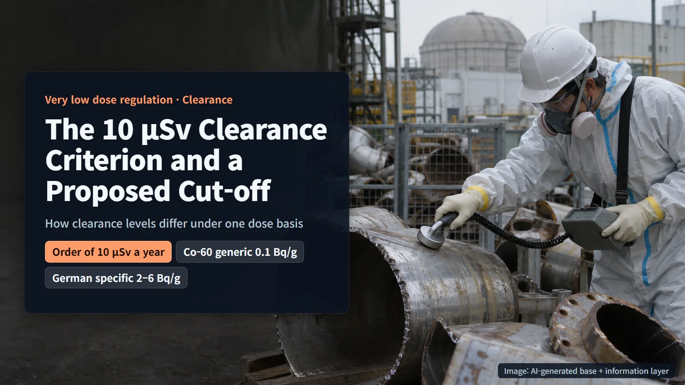
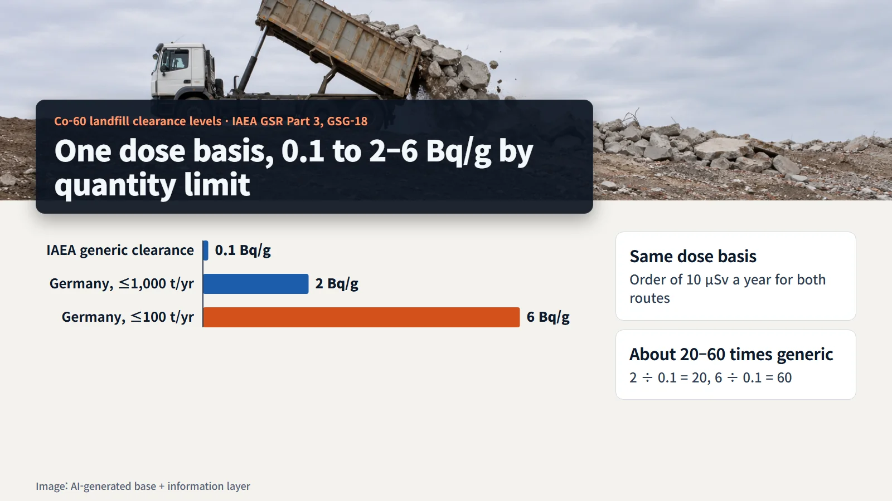
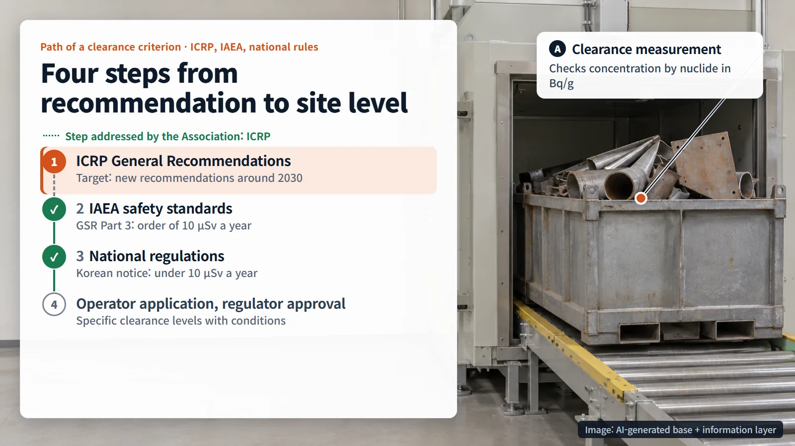

Policy & Regulation
The 10 µSv Clearance Criterion and the Industry's "Practical Lower Bound": How Clearance Levels Differ Under One Dose Basis
The World Nuclear Association's five recommendations, IAEA generic and specific clearance, the German and Belgian cases, and the timeline for the next ICRP General Recommendations
When a nuclear plant is dismantled, the "clearance" criterion decides whether metal and concrete with very low radioactivity can be recycled or landfilled like ordinary waste. On 25 November 2026 the World Nuclear Association issued a position statement that proposed a "practical cut-off" for very low doses, which puts that number back on the table. The current criterion is of the order of 10 µSv (microsieverts) in a year. The sievert measures the effect of radiation on the body, and 1 mSv (millisievert) equals 1,000 µSv.

The Five Recommendations in the World Nuclear Association Statement
The World Nuclear Association is an industry body representing over 280 companies across the nuclear value chain. It addressed 5 recommendations to the International Commission on Radiological Protection (ICRP), international organizations, governments and regulators: a graded, risk-informed approach; greater prominence for proportionality in the next ICRP General Recommendations; optimization rather than minimization; acknowledgement of uncertainty; and a practical cut-off below which no further regulatory effort is needed. Of the 5, only the last asks for a new dose value. The other 4 concern how existing principles are applied.
The background is the linear no-threshold (LNT) model, a working model for protection which assumes that the risk observed at high doses continues in proportion down to a dose of 0. The Association stated that clear epidemiological evidence of health risk exists only above about 100 mSv, and that the model is an unreliable indicator of risk at very low doses.
The position statement gives no number for the cut-off. The conclusions of the Association's technical report name "the region of a few tens of µSv/yr" as a candidate for further consideration, and the same report notes that earlier proposals ranged from 10 µSv a year up to 5–10% of the relevant dose limit. Applying 5–10% to the public dose limit of 1 mSv a year gives about 50–100 µSv, which is 5–10 times the 10 µSv criterion. That figure is the upper end of the earlier proposals described in the technical report; the Association has published no settled value.
The 10 µSv Exemption and Clearance Criterion and the "Trivial Dose"
Exemption leaves a low-risk practice or source outside regulatory requirements from the start; clearance releases material already under regulatory control. The basic safety standards of the International Atomic Energy Agency (IAEA), GSR Part 3, apply the same criterion to both: the effective dose expected to be incurred by any individual owing to the cleared material is of the order of 10 µSv or less in a year.
The IAEA safety guide GSG-18 describes a dose of the order of 10 µSv in a year as a "trivial dose", and explains that the phrase "some tens of microsieverts per year" in ICRP 104 covers the range 10–100 µSv in a year. The low end, 10 µSv, was chosen because it takes into account the possibility that one person is exposed to several cleared materials.
For a sense of scale, the Association puts the worldwide average natural background at about 3 mSv a year. Since 3 mSv is 3,000 µSv, a dose of 10 µSv a year works out to about 1/300 of that. The technical report's candidate, "the region of a few tens of µSv/yr", overlaps numerically with the trivial-dose range of ICRP 104. What is new in the proposal is the principle that further intervention below that level would require "special justification".
How a Dose Criterion Becomes a Concentration Table: Generic and Specific Clearance
On site, radioactivity in 1 g of material is measured as an activity concentration in Bq/g (becquerels per gram). The dose criterion is therefore converted into a table of concentrations by radionuclide. In Table I.2 of GSR Part 3 the generic clearance level is 0.1 Bq/g for both Co-60 and Cs-137. These values were derived from the criterion of the order of 10 µSv with a conservative model and a set of bounding scenarios.
GSG-18 notes that the conservatisms in the five components of the clearance process multiply and could in some cases exceed one order of magnitude, and it recommends reasonable steps to reduce them. The Association stated that doses to workers in the recycling industry are likely to be in the range 0.1–1 µSv a year; the reference cited for that range is one case study from 2017.
The second route is specific clearance. Conditions are attached to the type, amount and destination of the material, and the level is set with a realistic model. The radiological basis is the same as for generic clearance, of the order of 10 µSv in a year, and the resulting levels are usually less restrictive. Generic clearance uses one unconditional table; specific clearance accepts conditions in exchange for a value that fits the route.
Specific Clearance Cases in Germany and Belgium
GSG-18 documents cases. Germany derived specific clearance levels for landfill disposal and incineration and included them in its Radiation Protection Ordinance in 2011. Germany's specific clearance level for Co-60 going to landfill is 6 Bq/g for up to 100 t a year and 2 Bq/g for up to 1,000 t a year.

Set against the generic level of 0.1 Bq/g, the calculation is 2 ÷ 0.1 = 20 and 6 ÷ 0.1 = 60, so the German landfill levels for Co-60 are about 20–60 times higher. The dose criterion is unchanged; the difference comes from limiting the use to landfill and limiting the annual amount.
In the Belgian case, the generic clearance level for total uranium in soil is 1 Bq/g, and the regulatory authority granted a specific clearance of up to 10 Bq/g in contaminated sand, with a maximum of 12,450 t going to a conventional landfill for hazardous waste. The values in both cases come from the landfill route and its quantity conditions; levels for other routes such as recycling are assessed separately.
The Timeline for the Next ICRP General Recommendations and Korea's Self-Disposal Rule
A dose criterion moves from ICRP recommendations to IAEA safety standards, and then to national regulations and to an operator's application and the regulator's approval. The Association's cut-off proposal is aimed at the top step, the ICRP General Recommendations. ICRP has set a target of publishing new general recommendations around 2030 to replace ICRP 103 of 2007. At the Main Commission meeting of 29 May to 1 June 2026, the Strategic Planning Group had begun work on the structure of the draft, drafting responsibilities and the overall timeline, and the next Main Commission meeting will be held online in the second half of 2026.

Specific clearance operates at the lower steps. GSR Part 3 assigns the approval of clearance to the regulatory body, and GSG-18 explains that specific clearance levels can be set in national regulations or in response to an application by an operator. The German case put the values into legislation; in the Belgian case the regulatory authority granted an individual licence.
In Korea, clearance is called "self-disposal". Nuclear Safety and Security Commission Notice 2025-11 sets the permitted dose for self-disposal at less than 10 µSv a year for an individual and less than 1 man·Sv a year collectively, the same level as the IAEA clearance criterion. The notice allows self-disposal both for waste below the permitted concentrations and for waste demonstrated to satisfy the permitted dose.
The "practical cut-off" is a proposal from industry to ICRP and regulators, and the release date of a draft of the ICRP General Recommendations has yet to be announced. Meanwhile, within the current 10 µSv criterion, there are already cases where specific clearance with limits on use and quantity has produced different concentration levels.